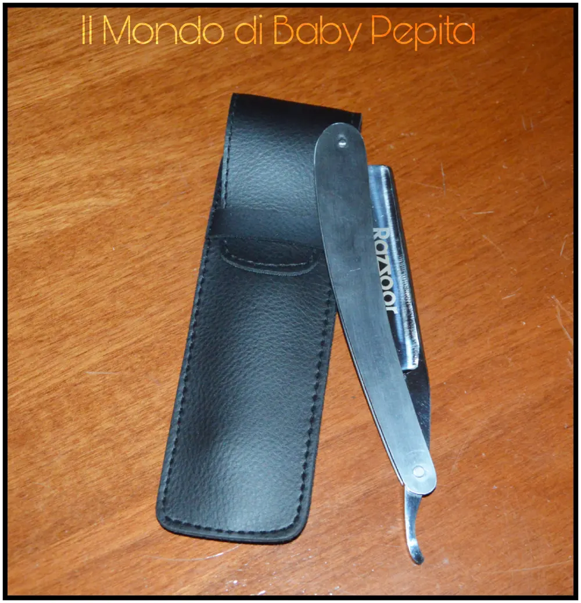
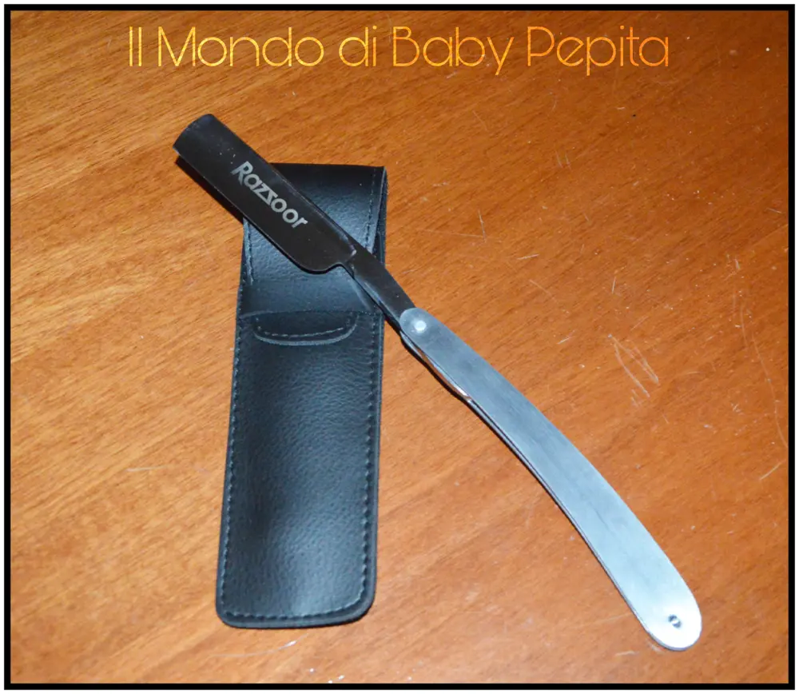
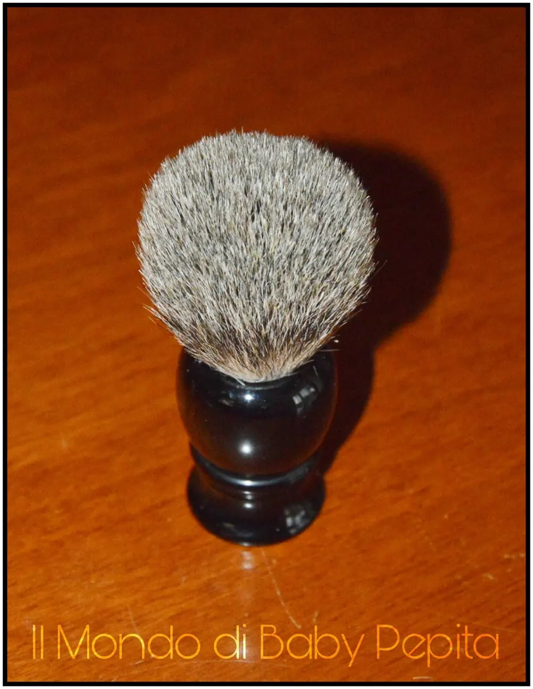
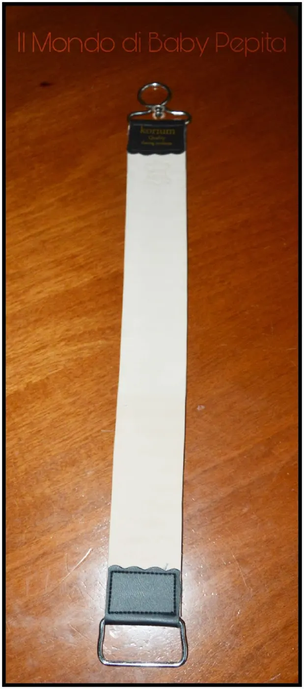
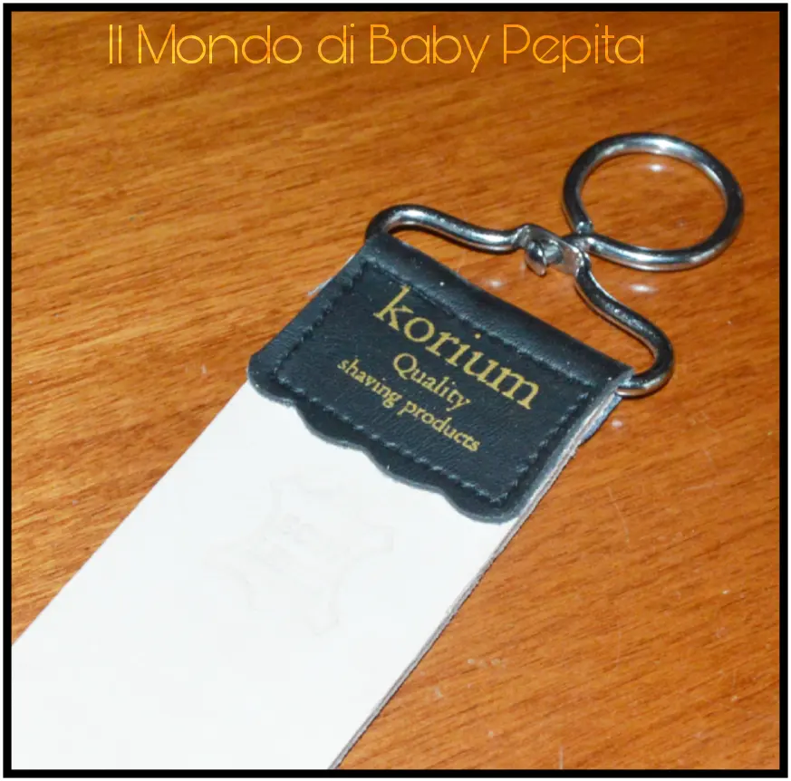
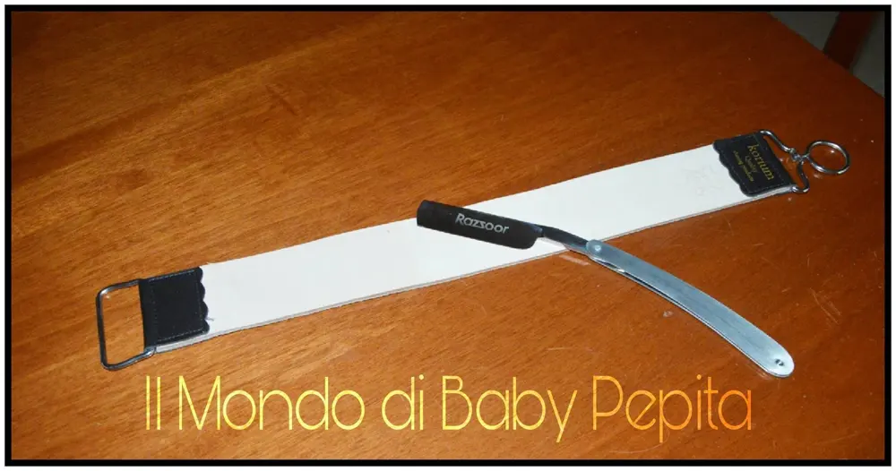
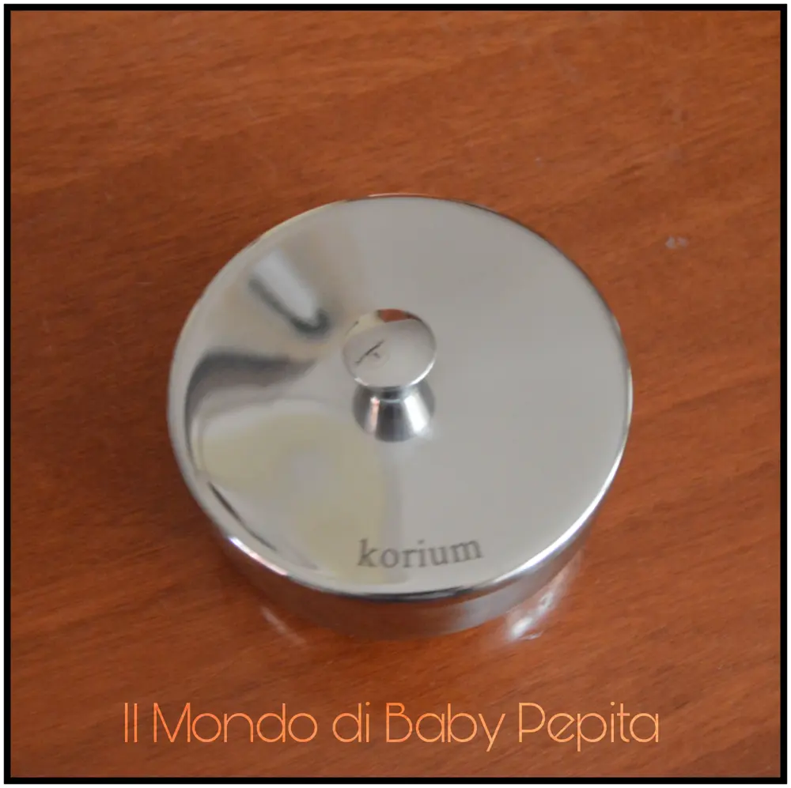
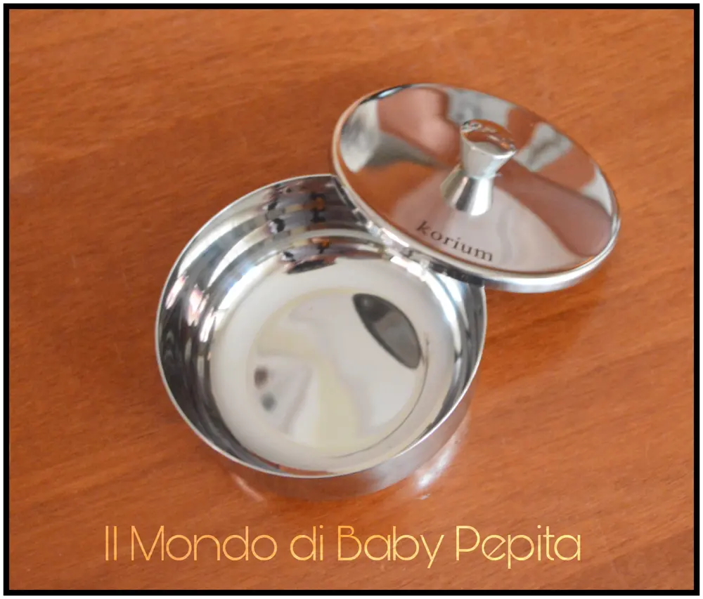

Set per la barba - rasatura tradizionale
Questo set esclusivo include tutto il necessario per la rasatura quotidiana:
- una lama in acciaio estremamente affilata.
- Una ciotola in acciaio inox
- un coramella in pelle
- un pennello da barba

Provate la rasatura tradizionale con un rasoio affilato: precisa, accurata e liscia. Rasoio, interamente in metallo. Le guancette del manico sono in acciaio inox, la lama del miglior acciaio al carbonio. Prodotto artigianale di qualità. Il modello è ideale per chi si avvicina per la prima volta a questo tipo di rasatura e ad un buon prezzo. Rasoio in acciaio al carbonio con un manico in acciaio inox con una lunghezza di circa 17 cm. La lametta in acciaio inox è perfetta per chi è abituato alla rasatura tradizionale. Taglia che è una meraviglia, bellissima anche da tenere come arredamento in bagno accanto al lavandino.
La consiglio anche ai barbieri professionisti in quanto è di ottima qualità.
Arrivata nei tempi previsti.

Per acquistare clicca QUESTA SCRITTA BLU!Prezzo: 49.95 €

Pennello: Nero tetto RAZZOOR incasso per rasoio pennello pasta di legno capelli Portare la tua esperienza di rasatura ad un nuovo livello con il nostro pennello da barba capelli.
Crea una schiuma ricca e non graffia anzi al contrario ha delle setole morbidissime, una vera carezza per il vostro viso.

Prezzo: 19.95 €Per acquistare clicca QUESTA SCRITTA BLU!
Coramella: 
Coramella per rasoi realizzato in vera pelle di bufalo.
Lunghezza 400 e larghezza 45 millimetri, perfetto per affilare i rasoi.
Una coramella esclusiva realizzata in vera cuoio di bufalo, molto morbida e flessibile. Con occhielli per appenderla e tenerla.

Lunghezza 400 mm e larghezza di circa 45 mm.
La morbida pelle di bufalo è particolarmente resistente ed estremamente flessibile e resistente. Questa cintura non solo è molto robusta nel suo uso, ma può anche essere un risparmio di spazio se ben arrotolata e piegata.
Con questa coramella raggiungerete i migliori risultati quando, rifinite' e ravvivate quotidianamente il vostro rasoio prima della rasatura. A causa della larghezza della lama di circa 75 mm, è opportuno maneggiare il coltello diagonalmente con una angolatura bassa, in modo da ripristinare il filo del rasoio in tutta la sua lunghezza.

Consiglio:Per 'affilare' si consiglia l'appropriata pasta per smerigliare rossa o verde.
Una vera chiccheria per chi come me ama abbellire il bagno con cose particolari.
Prezzo: 37,95 €
Per acquistare clicca QUESTA SCRITTA BLU!
Contenitore per la schiuma da barba:

Pratica ciotola in acciaio inox resistente alle cadute per la schiuma da barba, inossidabile e grazie al coperchio garantisce igiene e pulizia al sapone da barba.
Facilmente abbinabile a qualunque set di rasoio e pennello.

Prezzo:18,95 €Per acquistare CLICCA QUESTA SCRITTA BLU!Per quanto riguarda me, seguitemi sui social:FACEBOOKINSTAGRAMTWITTER
YOUTUBE